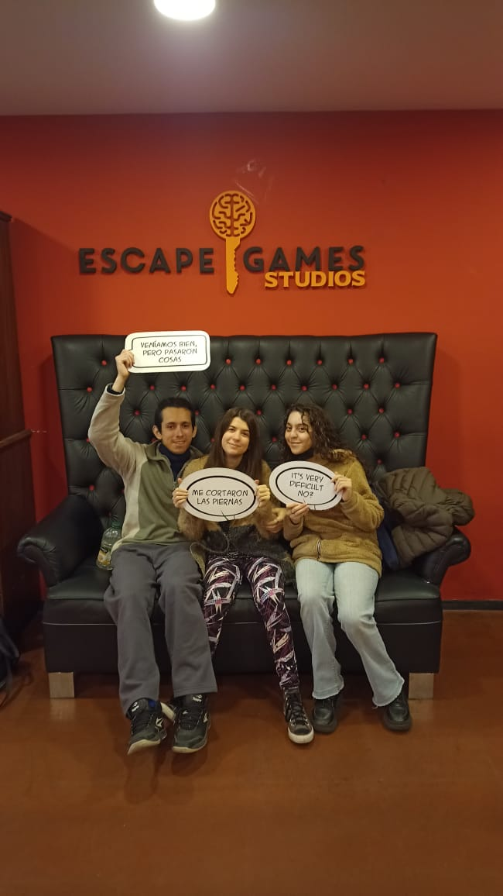

Nuestra historia comienza allá por el 2019, masomenos empezamos a hablar a finales del primer cuatrimestre
Ambos estabamos para la carrera de cs de la atmósfera
Y estábamos en el mismo grupo de tutorías, yo estaba en mi momento más sociable y vi tus stickers de gumball y te pedi si me los pasabas, lo que accediste con muy buena onda
Luego viste que los empecé a usar y te hizo gracia, así que empezamos a hablar
Luego nos conocimos junto al buen Jaime y me caiste re piola, aunq yo era más chiquito en ese tiempo y te veía muy grande y universitaria toda ahí curtida por la UBA
Después cursamos física juntos, con achu, leti, dos joacos, tronco y alguna q otra persona
Q no recuerdo
La verdad q yo en ese tiempo estaba más enfocado a hacer sociales q a estudiar supongo… Porque me fue para el culo… Pero trabamos una bonita amistad
Hasta te fui a ver a tu recibida
Y bueno, de golpe y porrazo cayo la pandemia
Yo la verdad no la sentí tanto, estaba acostumbrado a estar solo y lo sentí como un periodo de vacaciones de la gente, me puse a enfocarme en mis puntos débiles de gimnasia y poquito más
Pero en ese tiempo tu vieja se puso mal y la pasaste muy mal
Y yo trate de estar lo más presente posible
Y de a poquito empezaron a pasar cositas UwU
Jugamos al brawl juntos
Yo me puse al dia con one piece
Y de a poquito tu vieja se fue estabilizando
Cuando terminó la pandemia nos volvimos a encontrar y vos me abrazaste y yo temblaba UwU
Había mucha tensión sexual y yo con suerte podía pensar en la posibilidad de sacarme el barbijo
Recuerdo que eso fue en diciembre del 2020
Y ya despues de unas veces de vernos nos besamos UwU
Un besito q fue un poquito besito piña, pero fue muy bonito
Yo no sabía muy bien como sentirme, tenia miedo a lo "nuevo" y a no ser suficiente, pero a la vez me gustabas mucho, y cada vez me gustabas mas... pero después todo se acabo
Resulta que no me había dado cuenta q vernos una vez por mes era muy poco... lo q te llevo a pensar q yo no sentía nada por vos y te tomaste una semanita para olvidarme
Eso me dolió mucho y lo sentí como un baldazo de agua fría
Pero me di cuenta de que no quería aceptarlo, no quería rendirme, quería estar con vos, así que me propuse seguir intentando. Por unos meses no nos vimos, no sabía muy bien como acercarme y ludmila me aconsejaba que te diera tiempo, Y así lo hice
Aunq bueno, vos no perdiste el tiempo en esas semanas jajaja
Finalmente nos volvimos a ver en junio, y vos ya no sentias nada por mi Pero yo segui intentando. Un poco desesperanzado porque me decias q ya no sentias nada por mi, pero me abrazabas lindo y me ponías las piernitas en las mías y eso me ilusionaba con que, de a poquito, me estabas volviendo a querer
Hasta que un fin de semana se quedó a dormir un amigo tuyo en tu casa y yo me sentí muy celoso Y acordamos juntarnos a hablar ese martes, 27 de julio del 2021
Ese dia nos vimos en tu casa y pasaron cositas UwU Nos dimos amorcito intensamente por primera vez Y empezamos a estar juntitos Y de a poquito ese estar juntitos se transformó en una relación abierta Yo amaba la parte de estar con vos, pero odiaba la parte de compartirte Y pasó mucho tiempo hasta que me di cuenta que ya no lo iba a soportar mas
Y te lo dije un 25 de mayo del 2022, y ese dia vos me dijiste que preferías dejar de estar en una relación abierta antes que perderme Y ese dia empezamos a ser novios (aunque para vos fue dos días después) Y ya pasó más de 1 año de que somos novios
Es dificil para mi reescribir esto, básicamente porque ya lo venia escribiendo re lindo desde hace unos meses y se me borro el texto la ultima vez q se me reseteo el wasap Y por eso este no creo q salga tan lindo… Pero lo voy a intentar
Siempre me molestaron los sueños de Denji de Chainsaw man, el pibe motosierra q sueña con cosas como salir con una chica y tener novia Pero cuando vi el anime me di cuenta que él no era el único que soñaba con esas cosas Amorcito, yo antes, antes de vos, antes de toda nuestra historia, realmente sentía que no era suficiente, como para que alguien me quisiera, o incluso, si alguien me queria, sentia que no era suficiente para ser algo para esa persona, por lo que la idea de estar con alguien que me quisiera y comprendiera me parecía un sueño Cosas tan simples como un beso, un abrazo, cocinar juntos, dormir juntos, que apoyes tu cabecita en mi pecho, me parecen un sueño
Siempre que estoy con vos vivo ese sueño hermoso, y nunca hubiese soñado con tener una novia tan maravillosa como vos Asi q vos haces realidad uno de mis sueños UwU